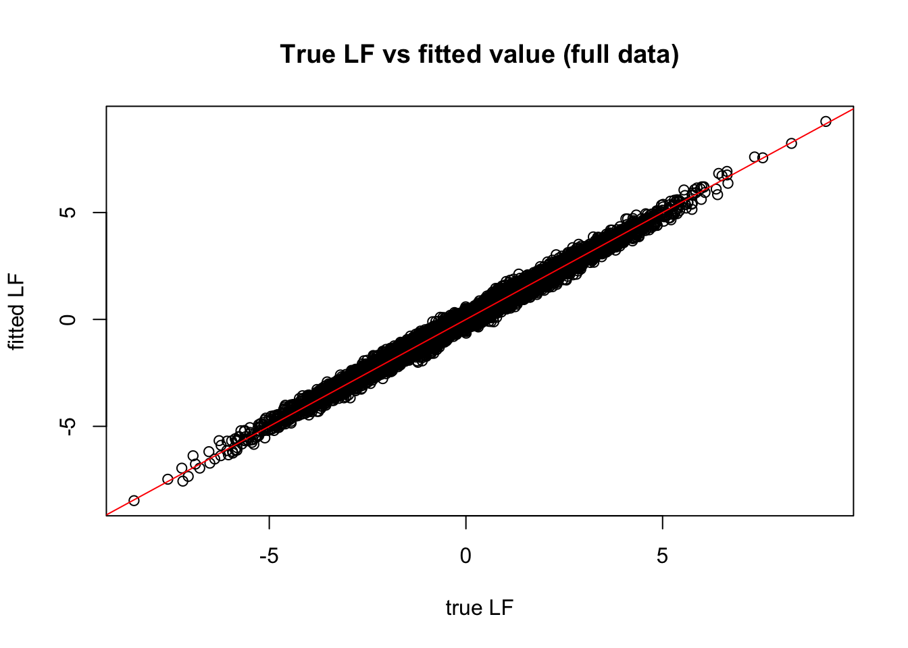
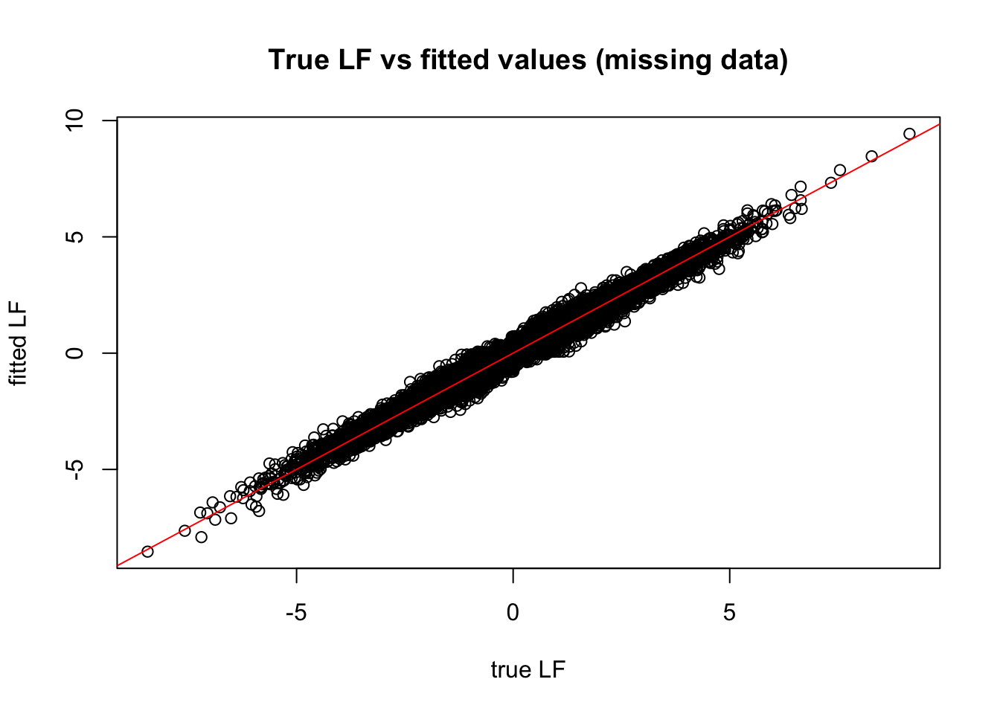
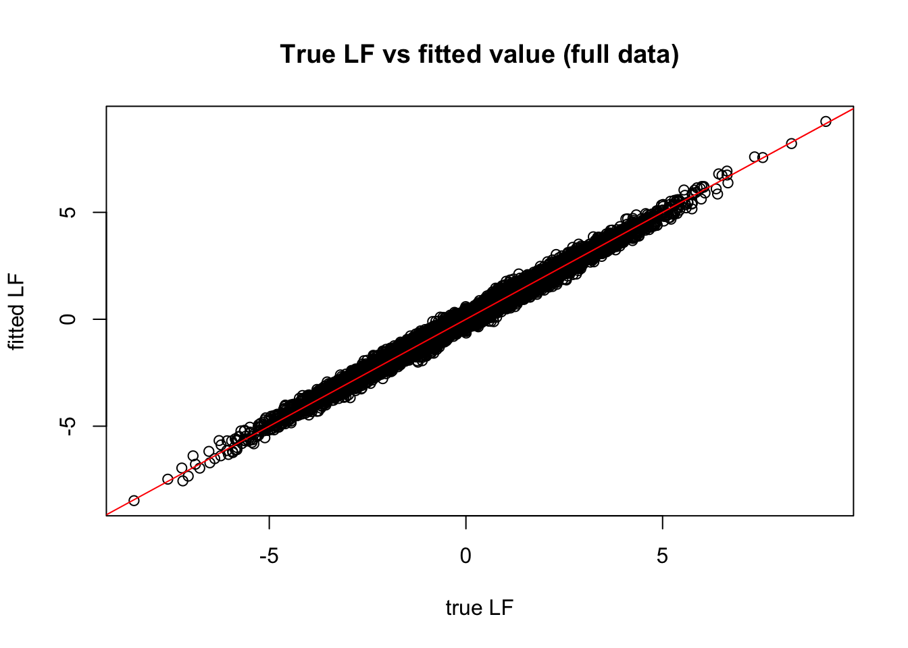
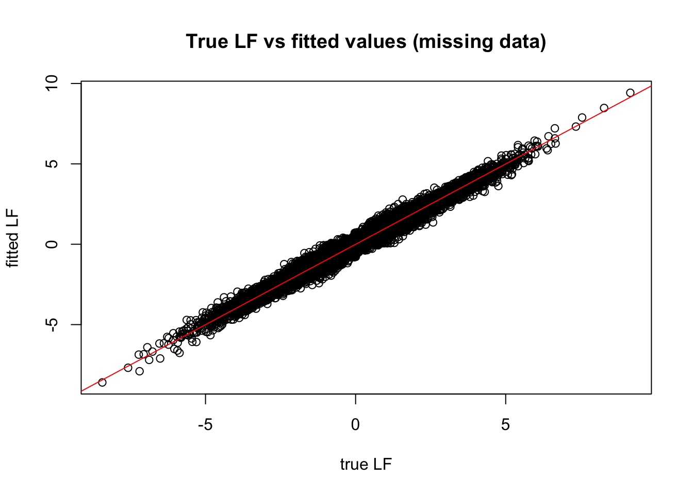

First we will simulate some rank 1 data:
library("flashr")
set.seed(1)
n=100
p=1000
ll = rnorm(n)
ff = rnorm(p)
LF = outer(ll,ff)
Y = LF + rnorm(n*p)Now add some missing data at 50 percent of entries
Y.miss = Y
for(i in 1:n){ # set half of Y to be missign at random
Y.miss[i,sample(1:p,p/2)]=NA
}Run flash (with \(K=1\)) on the full data
data = flash_set_data(Y)
f= flash(data,Kmax=1,verbose=TRUE)## fitting factor/loading 1## Objective:-144326.525063464## Objective:-144323.401367746## Objective:-144323.400734634## performing nullcheck## objective from deleting factor:-166508.486064945## objective from keeping factor:-144323.400734634## nullcheck complete, objective:-144323.400734634 plot(LF,flash_get_lf(f),main="True LF vs fitted value (full data)",xlab="true LF",ylab="fitted LF")
abline(a=0,b=1,col="red")
And on missing data
data.miss = flash_set_data(Y.miss)
f.miss = flash(data.miss,Kmax=1,verbose=TRUE)## fitting factor/loading 1## Objective:-72878.3428854883## Objective:-72871.9459442935## Objective:-72871.9388845935## performing nullcheck## objective from deleting factor:-83195.7765049021## objective from keeping factor:-72871.9388845935## nullcheck complete, objective:-72871.9388845935 plot(LF,flash_get_lf(f.miss),main="True LF vs fitted values (missing data)",xlab="true LF",ylab="fitted LF")
abline(a=0,b=1,col="red")
And compute overall RMSE of estimated low-rank structure.
sqrt(mean((LF-flash_get_lf(f))^2))## [1] 0.1051672 sqrt(mean((LF-flash_get_lf(f.miss))^2))## [1] 0.1467077And try setting the var_type slightly differently:
f= flash(data,Kmax=1,var_type = "constant",verbose=TRUE)## fitting factor/loading 1## Objective:-144780.750947514## Objective:-144777.709712187## Objective:-144777.709278436## performing nullcheck## objective from deleting factor:-173720.095559219## objective from keeping factor:-144777.709278436## nullcheck complete, objective:-144777.709278436 plot(LF,flash_get_lf(f),main="True LF vs fitted value (full data)",xlab="true LF",ylab="fitted LF")
abline(a=0,b=1,col="red")
sqrt(mean((LF-flash_get_lf(f))^2))## [1] 0.1050241 f.miss = flash(data.miss,Kmax=1,var_type = "constant",verbose=TRUE)## fitting factor/loading 1## Objective:-73346.0085701801## Objective:-73339.9109021195## Objective:-73339.9073790492## performing nullcheck## objective from deleting factor:-87044.9863407244## objective from keeping factor:-73339.9073790492## nullcheck complete, objective:-73339.9073790492 plot(LF,flash_get_lf(f.miss),main="True LF vs fitted values (missing data)",xlab="true LF",ylab="fitted LF")
abline(a=0,b=1,col="red")
sqrt(mean((LF-flash_get_lf(f.miss))^2))## [1] 0.1467849